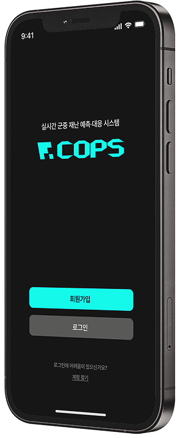
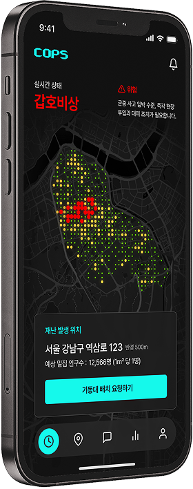

실시간 군중 재난 예측·대응 서비스


실시간 군중 재난 예측·대응 서비스
안전 시스템의 빈틈,
그 사이로 스며든 군중재난 사고
이태원 참사는 단순한 사고가 아닌, 예방과 대응 그리고 구조적 문제가 복합적으로 얽혀 발생한 인재라 볼 수 있습니다.
예방 실패
대규모 인파가 예상되었음에도 불구하고, 일방통행이나 유입 차단 같은 기본 대책이 부재했고, 112 신고가 18시 34분부터 접수되었으나 신속한 대응이 이뤄지지 않았습니다.
대응 실패
현장 경찰 인력이 부족했고, 이마저도 질서 유지보다 마약 단속에 집중되어 있었습니다. 또한, 소방과 경찰 등 유관 기관이 재난통신망을 활용하지 못하고 각자 민간 메신저에 의존하여 서로의 상황을 공유하지 못했습니다.
구조적 문제
주최자가 없는 행사에 대한 인파 관리 방안이 없었고, ‘압사 위험’ 신고가 ‘위험 방지’ 코드로 분류되는 등 신고 시스템에 문제가 있었습니다.
사용자들의 니즈와 페인포인트를
알아보기 위한 설문조사를 진행했습니다.
응답자
총 194명
일시 및 기간
2025. 9.13 ~ 9.17
(5일간 진행)
목적
군중 재난 예측·대응 시스템 제작을
위한 사용자의 니즈/원츠 도출
A1.
잦은 재난문자와 불필요한 정보로 인해, 중요한 알림의
심각성을 느끼지 못하고 무시하게 됨
A2.
알림 소리가 너무 커서 불편하기에 알림을 꺼두는 경우가
많아, 필요한 정보를 받지 못하는 문제점이 발생함.
A3.
재난 문자의 내용이 너무 길어 ‘어디서', ‘어떤 일이'
일어났는지 내용이 불명확한 경우가 많다고 느낌.
A4.
개인의 위치나 상황과 무관한 재난 문자가 자주 와서
필요없는 정보가 많다고 느낌.
A1.
대피 경로 안내
A2.
실시간 인구 밀집 지도
A3.
실시간 소통 게시판
만약 군중 재난 상황에 처한다면 어떤 기능을
사용할 것 같나요?
Police
현장과 본부가 동일한 정보를 공유하며
신속한 의사결정을 통해 위험을 예측·대응한다면?
Citizen
안전을 보장받으며 신뢰성 있는 정보를 얻을 수
있는 간단하고 실용적인 통합 안전 서비스가 있다면?
Persona
김지현
서울경찰청 교통과
재난 시 즉각 경보를 제공하고
위험구역을 시각적으로 표시하도록 함
홍기현
서울경찰청 경비과
재난 상황을 미리 대처할 수 있도록
AI가 대응 과정을 기록하고 분석하여 제공함
노은주
대학생
음성·알림으로 위험을 즉시 알리며
위치 기반 안전하고 빠른 대피경로를 제공함
01
Connect
공공기관과 시민이 실시간으로 연결되어 신속하고
일관된 대응이 가능한 안전협력 체계를 구축합니다.
02
Guide
단순 정보 전달이 아닌, 사용자별 특징을 고려한 정보를 제공하여 개인화된 경험을 선사합니다.

03
Prevent
데이터 기반의 통합 서비스를 통해 군중 재난에 실시간
으로 대응하고 세부 분석을 통해 재발을 방지합니다.
Logo
군중 재난 상황에서 안전한 방향을 제시하는 서비스의 성격을 반영하여
기하학적 형태의 선과 면을 통해 명확한 길을 제시하는 COPS의 정체성을 나타냈습니다.
App Icon

Typography
ENG/KR
프리텐다드
Pretendard
Title 1
30 Bold
Title 2
24 SemiBold
Title 3
20 SemiBold
Sub Title 1
18 SemiBold
Sub Title 2
16 SemiBold
Body 1
16 Medium
Body 2
14 Medium
Caption
18 SemiBold
Button
18 SemiBold
Button 2
16 SemiBold
Color
Cops Aqua
#19F8E6
Cops Red
#FF0000
Cops Yellow
#FFC943
Cops Green
#73FF00
사용자가 자신의 소속을 선택할 수 있도록 하여
보다 효율적인 인력 관리가 가능하도록 서비스를 제공합니다.
Step 1
Step 2
Step 3
실시간 밀집 지도로
가장 빠른 상황 판단
지원
실시간 밀집 지도를 통해 현재 위치와 밀집 정도를
시각화된 자료로 확인하며 재난 상황에 대비 할 수 있도록 합니다.
실시간 상태에 따른
상황별 위험 단계 시각화
빠른 군중사고 대처를
위한 인력 배치 요청 기능
현재 위치에 대한
상세 정보 제공
통신마비 상태에서도 이용하는
신속·정확 경로별 안내
시민들의 이동 상황을 실시간으로 확인하여 최적의 경로를 확인하고
경로를 미리 저장하여 통신 마비 상황에서도 시민들의 이동 경로를 파악합니다.
오프라인 저장 기능을 통해
재난 상황에서도 빠르게 경로 확인 가능

원활한 소통을 위한
기관 별 요청사항 전달 기능
재난 상황시 지원요청 등 급박한 상황에서
타 기관과의 원활한 소통을 할 수 있게 돕습니다.
재발 방지를 위한
재난 상황 분석 리포트
재난이 종료 후 AI 분석 리포트가 자동 작성되기에
지난 사건의 분석 내용들이 필요할 때 다시 확인해 볼 수 있습니다.
이벤트 키워드와
상세한 분석내용 제공
웨어러블 기기로
한층 더
향상된 접근성
COPS는 스마트 워치 환경에서도 제공되기에
즉각적인 알림 인지가 가능하고 양손을 자유롭게 합니다.
언제 어디를 가도
미리 대비
가능한 시민 서비스
밀집도 확인부터 대피 경로까지 제공되는 것은 물론,
실시간 게시판을 통해 현장 상황을 생생히 공유하고 확인할 수 있습니다.